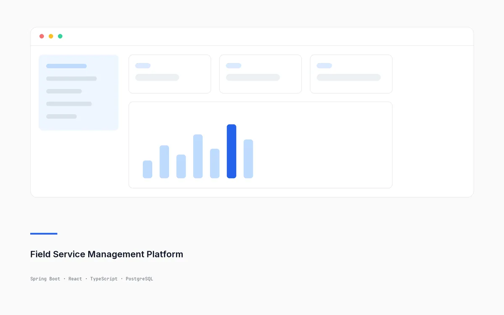
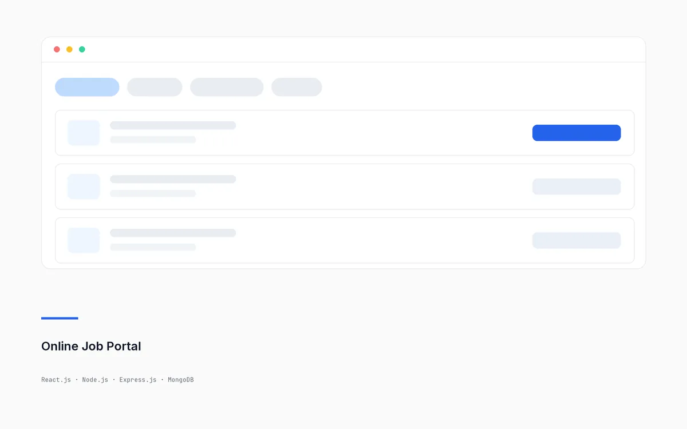
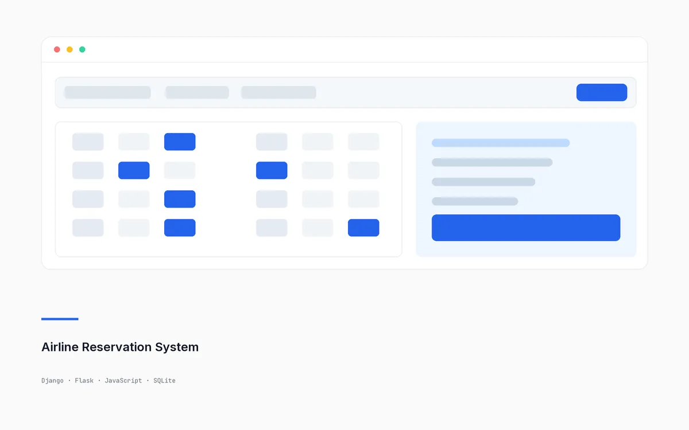
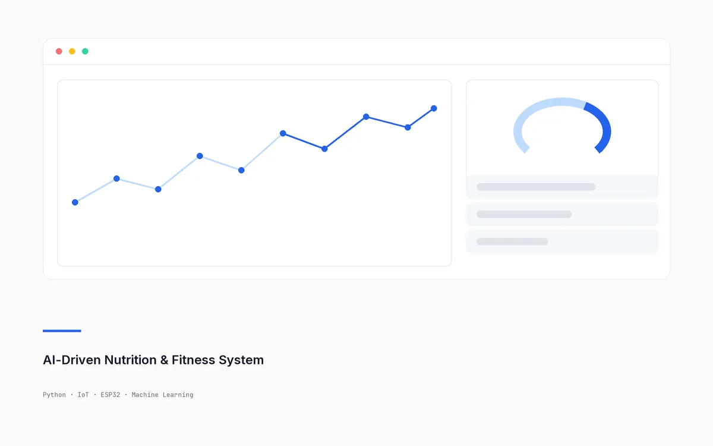

B.Tech — Computer Science & Engineering (AI & IPA)
CGPA 9.27 / 10
Full-Stack Developer · Java, Spring Boot, React
Immediate Joiner · Open to Hyderabad / Bengaluru
B.Tech CSE (AI & IPA) graduate with a 9.27 CGPA and two internships building full-stack web modules and RESTful APIs in Java, Spring Boot and JavaScript. I like turning messy requirements into clean, working software — most recently a role-based field service platform with JWT authentication, JPA/Hibernate data access and analytics dashboards.
Four full-stack builds from internships and coursework. Open a card to read the short case study — what it does, what I built, and what I took away from it.

Featured · In progress
A centralised, role-based suite for dispatching technicians, tracking parts and monitoring SLA compliance across work orders.
Gives a service organisation one place to raise work orders, assign the right technician, track the parts needed for each job and watch SLA deadlines across the board — with each role seeing only what it should.
Designing permissions early is far cheaper than retrofitting them: getting roles into the data model first shaped the API and the UI at the same time.

A responsive MERN recruitment platform with dynamic job filtering and applicant management.
Lets recruiters post openings and lets candidates search, filter and apply — with an applicant pipeline the recruiter can move through as people progress.
Most of the speed-up came from the database, not the UI — indexing the fields recruiters actually filtered on did more than any front-end change.

An end-to-end booking application with secure authentication, automated seat allocation and mock payment processing.
Search flights, pick a seat and complete a booking — with seat availability and confirmations handled by the backend rather than trusted from the browser.
Splitting a project across Django and Flask forced me to keep state and authentication consistent between two frameworks — a good lesson in where session logic really lives.

An IoT telemetry pipeline that reads live vitals and turns them into personalised health and dietary recommendations.
Collects heart rate and blood-oxygen readings from wearable sensors, stores them as a time series and uses them to suggest meals and workouts suited to the person.
Real sensor data is messy — a third of the work was filtering noise, not modelling, before any prediction could be trusted.
Jul 2026 — Oct 2026
Remote
Zidio Development · Bengaluru, Karnataka
Jun 2024 — Jul 2024
Remote
Octanet Services Pvt Ltd · Vijayawada, Andhra Pradesh
CGPA 9.27 / 10
Contributed to technical workshops, student mentorship and initiatives promoting analytics and innovation within the club.
Looking for a full-stack or backend role in Hyderabad or Bengaluru. I usually reply the same day — email is the fastest way to reach me.